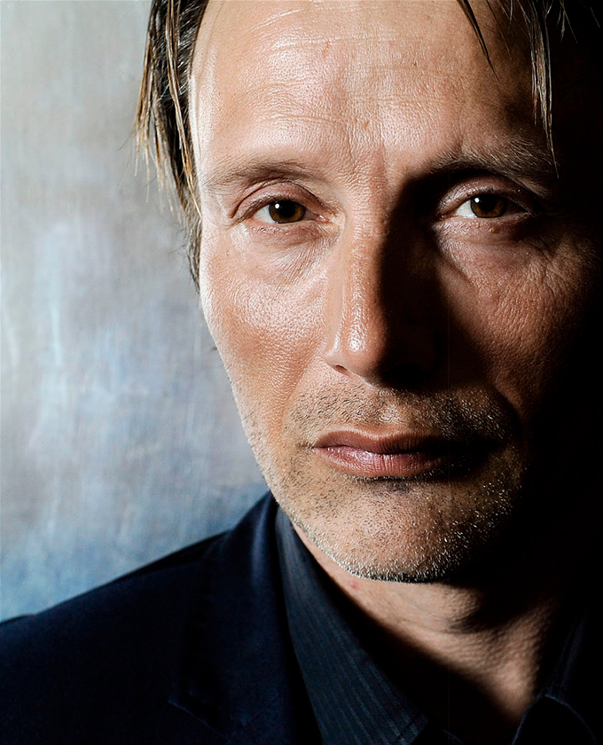

MENU
CONCEPT
Mads
SERGIY SHAPOVAL
2020
BIOGRAPHY

Mads Dittmann Mikkelsen, R is a Danish actor. Originally a gymnast and dancer, he rose to fame in Denmark as an actor for his roles. Mikkelsen achieved worldwide recognition for playing the main antagonist Le Chiffre in the twenty-first James Bond film, Casino Royale (2006). His other roles include Igor Stravinsky in Coco Chanel & Igor Stravinsky (2008), Johann Friedrich Struensee in A Royal Affair (2012), his Cannes Film Festival Best Actor Award-winning performance as Lucas in the Danish film The Hunt (2012), Dr. Hannibal Lecter in the television series Hannibal (2013–2015), Kaecilius in Marvel's Doctor Strange (2016), Galen Erso in Lucasfilm's Rogue One: A Star Wars Story (2016) and Cliff Unger in Hideo Kojima's video game Death Stranding (2019). A. O. Scott of The New York Times remarked that in the Hollywood scene, Mikkelsen has "become a reliable character actor with an intriguing mug" but stated that on the domestic front "he is something else: a star, an axiom, a face of the resurgent Danish cinema".
Mikkelsen made his film debut in 1996 as a drug dealer in Nicolas Winding Refn's internationally successful film Pusher, which would later spawn two sequels. He went on to play marginalized, often comic roles in popular Danish movies. In 1999, Mikkelsen had a leading role as Lenny, a shy film expert who suffers from avoidant personality disorder, opposite Kim Bodnia in Refn's Bleeder (1999). In 2000, Mikkelsen played a gangster opposite Søren Pilmark, Ulrich Thomsen and Nikolaj Lie Kaas in Anders Thomas Jensen's Copenhagen gangster movie, Flickering Lights. The following year, he gained wider popularity when he starred in the gay comedy Shake It All About (2001).
In 2002, Mikkelsen had a starring role as a young doctor who falls in love with the girlfriend of one of his patients in Open Hearts which earned him both Robert and Bodil nominations in 2003 for best actor. He also won best actor for this performance at the Rouen Nordic Film Festival in 2003. In 2003, Mikkelsen had a leading role as a man who leaves his wife and child in the short film Nu. He starred opposite Kaas in The Green Butchers, playing an orphaned butcher's assistant in a small provincial Danish town, where human meat is a specialty. He won the Fantasporto Award for Best Actor for his portrayal of the butcher. Later in 2003, he starred in Pablo Berger's Spanish film Torremolinos 73, about an exasperated encyclopedia salesman who exports pornographic films to Scandinavian countries under the pretense of being an audiovisual encyclopedia of human reproduction. Although a critical success in Spain, the film was poorly received in Scandinavian countries.
In 2004, Mikkelsen reprised his role as drug dealer Tonny in the Pusher sequel, Pusher II. His performance was acclaimed, garnering him the Bodil Award for Best Actor, Zulu Award for Best Actor and Robert Festival Award for Best Actor. One writer likened his pose in the mirror in the film to Robert De Niro in Martin Scorsese's Taxi Driver. In 2005, Mikkelsen portrayed an "unorthodox country vicar" named Ivan who challenges a neo-Nazi (Ulrich Thomsen) who has been sentenced to community service to bake an apple pie in Adam's Apples.
Mikkelsen's breakthrough and his longest running role was as a sensitive policeman in Niels Arden Oplev's Danish television series Rejseholdet (Unit One) (2000–03), for which he won the 2002 Best Actor Award from TvFestival.dk. The series' 32 episodes stretched over four years. He became more widely known internationally for his role as Tristan in Jerry Bruckheimer's production of the movie King Arthur (2004), which was a commercial success despite negative reviews.
Mikkelsen at the 2009 Venice Film Festival In 2006, Mikkelsen starred opposite Stine Stengade and Jana Plodková in Ole Christian Madsen's award-winning film Prag (Prague). His role as Christoffer earned him the Zulu Award for Best Actor and Bodil and Robert Festival nominations for Best Actor. Eddie Cockrell of Variety noted his "rigid countenance" in an "outstanding" performance. The same year, Mikkelsen achieved his first widely acclaimed international success as Le Chiffre in the twenty-first James Bond film, Casino Royale. Mikkelsen has said that he so easily won the part that even Daniel Craig asked him if he had slept with someone in order to be cast. He said of the casting, "They'd done their homework, seen my stuff, so it was fine, just a bit of anti-climax, because I was so ready to do more for them, but it was … shrugs... you're in." He also stated that because he was already a big film star in Denmark at the time, that the international role did not really change much. Roger Ebert noted the suspense during Mikkelsen's scene with Bond during the extended poker game, in which Le Chiffre weeps blood from his left eye. David Edelstein of New York Magazine said "Mikkelsen clicks his rectangular plaques as if he's a new breed of praying mantis. He's bloodcurdling." In 2006, Mikkelsen also took the lead role in the Danish drama After the Wedding, which earned an Academy Award nomination for Best Foreign Film. He won the Palm Springs International Film Festival Award for Best Actor and a European Film Award for Best Actor nomination for his performance. The New York Times remarked that on the Hollywood scene, Mikkelsen has "become a reliable character actor with an intriguing mug" but stated that on the domestic front "he is something else: a star, an axiom, a face of the resurgent Danish cinema."
In 2008, Mikkelsen portrayed Danish resistance fighter Jørgen Haagen Schmith opposite Thure Lindhardt and Stine Stengade in Ole Christian Madsen's Flame & Citron (Flammen & Citronen), a film which is loosely based on actual events involving two of the most active fighters in the Holger Danske resistance group during World War II. Mikkelsen's character nicknamed "Citronen" is named after a Citroën factory in which he works. Michael O' Sullivan of The Washington Post likened Mikkelsen and Lindhardt's characters to Butch Cassidy and the Sundance Kid and said that it is "the story of handsome rogues with guns. It's fast-paced, stylish and thrilling." In 2008, Mikkelsen also provided the voice for the character Le Chiffre in the Quantum of Solace video game, and he represented Le Chiffre when he was invited to the launch of Swiss watchmaker Swatch's "007 Villain Collection" in Bregenz, Austria. The following year, gaining a reputation as one of Europe's most sensuous male actors, Mikkelsen played a hot-blooded Stravinsky opposite Anna Mouglalis in Jan Kounen's critically acclaimed Coco Chanel & Igor Stravinsky based on the romance between the composer and the fashion designer. Empire magazine described it as a "visually stunning film [which] focuses on Chanel and Stravinsky's illicit relationship in 1920s France."] Philip French of The Observer described the film as a "beautiful, intelligent, shallow film, like a pane of plate glass that at first glance looks like a deep lake", and remarked that Mikkelsen's Stravinsky matched Mouglalis's Coco Chanel as a "fellow modernist and equally cool egotist." Mikkelsen then returned to violent action, collaborating once again with Refn, playing a Norse warrior in the Crusades in Valhalla Rising (2009) and Draco, a self-sacrificing leader of the king's guard in Clash of the Titans (2010). Valhalla Rising was shot entirely in Scotland.
Mikkelsen at the 2016 San Diego Comic-Con International In 2011, he played Comte de Rochefort in another box-office success, The Three Musketeers, which earned poor reviews from critics. In 2012, he starred in The Hunt, for which he won the Best Actor Award at the Cannes Film Festival. He played a schoolteacher wrongly accused of child molestation, earning nominations for the European Film Award for Best Actor and the London Film Critics Circle Award for Actor of the Year for his performance. The same year he starred in the Oscar-nominated historical drama A Royal Affair taking the role of the 18th century physician Johann Friedrich Struensee who had an affair with Queen Caroline Mathilda while treating the mentally ill Danish monarch, Christian VII. The movie was one of the highest budget Danish films of all time largely due to its extravagant costumes and was well received by critics. Mikkelsen said of his role, "I was surprised how emotional I got reading this, especially for a period drama. And it was full of dilemma – he's full of love for both the king and the queen, but then he remains political, starts spinning his tunnel vision, and all of a sudden he's doing the exact same things he hated all the other courtiers for doing, and I thought that was interesting, and very human." In 2012, he was also awarded the Danish American Society's Person of the Year.
Mikkelsen played Hannibal Lecter in NBC's TV series Hannibal (2013–15), alongside Hugh Dancy as Special Agent Will Graham. The series has been a critical success, with Mikkelsen's performance as Lecter earning praise. Mikkelsen was initially dubious about accepting the role, as he believed that Anthony Hopkins' portrayal of Lecter was "done to perfection". He said of his character, "He's not a classic psychopath or a classic serial killer. I believe that he's as close to Satan as can be – the fallen angel. He sees the beauty in death. And every day is a new day, full of opportunities."
In 2013, he appeared in Charlie Countryman alongside Shia LaBeouf and Evan Rachel Wood, which had its premiere at the Sundance Film Festival, and later that year played the title character in Michael Kohlhaas, which had its premiere at the 2013 Cannes Film Festival. In 2014, he starred in The Salvation, a Danish western. Mikkelsen appeared on Rihanna's music video for "Bitch Better Have My Money" as her accountant, the song's titular "bitch" who stole from her.
In 2016, Mikkelsen was a member of the main competition jury of the 2016 Cannes Film Festival. In October 2016, he appeared as Kaecilius in the Marvel film Doctor Strange, alongside Benedict Cumberbatch and Tilda Swinton. Although his character was criticized for being under-utilized and another "generic baddie" for Marvel, Mikkelsen's performance was a favorite of RogerEbert.com's Matt Zoller Seitz: "Mikkelsen is a master at being in on the joke while still delivering every line with imagination and feeling.... he's often knowing and wry, even arch, a mix of performance traits that's often hard to combine with any success." In December 2016, Mikkelsen portrayed Galen Erso in the Star Wars spin-off film, Rogue One: A Star Wars Story. In 2018, he starred in a survival thriller Arctic, directed by the Brazilian filmmaker Joe Penna. He joined the cast for Doug Liman's film Chaos Walking.
Mikkelsen starred in Hideo Kojima's video game Death Stranding. In 2018, he had a supporting role in Julian Schnabel's film At Eternity's Gate starring Willem Dafoe. In 2019, he starred in Jonas Åkerlund's action film Polar, which is based on Víctor Santos' graphic novel Polar: Came With the Cold. On Rotten Tomatoes it has an approval rating of 19% based on reviews from 47 critics.
Mikkelsen has also appeared in Carlsberg's new 2019 UK advert, announcing that the brand's flagship beer has been rebrewed to become a Danish pilsner.